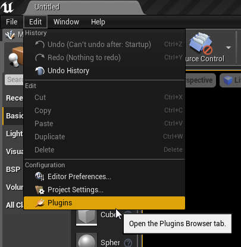

Manual Installation¶
Manual Installation: If you have purchased your copy of Dungeon Architect from Code Respawn, you can download the latest build at any time and install it into your project with the following steps
In your game’s root directory, create a folder named Plugins
- Copy the DungeonArchitect folder found in this archive under Plugin/4.X/ into your game’s plugin folder (which was created in step 1). For example, in the ShooterGame sample demo, the directory structure should look like this:

- Restart the Unreal Editor (if already open) and verify that Dungeon Architect is enabled by navigating to Window Menu > Plugins
- 
- Confirm that Dungeon Architect is visible and enabled